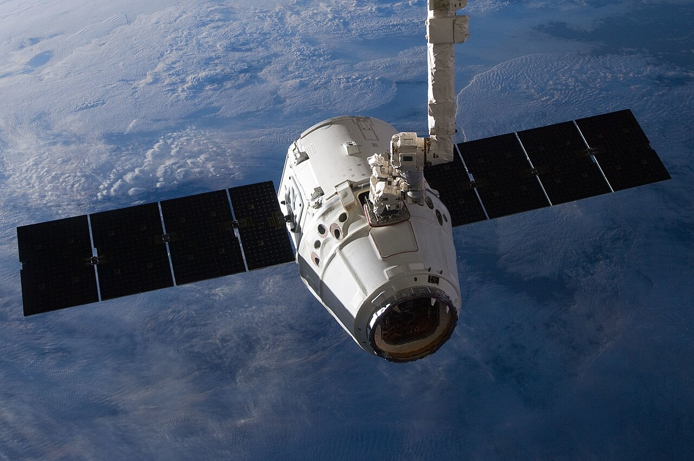
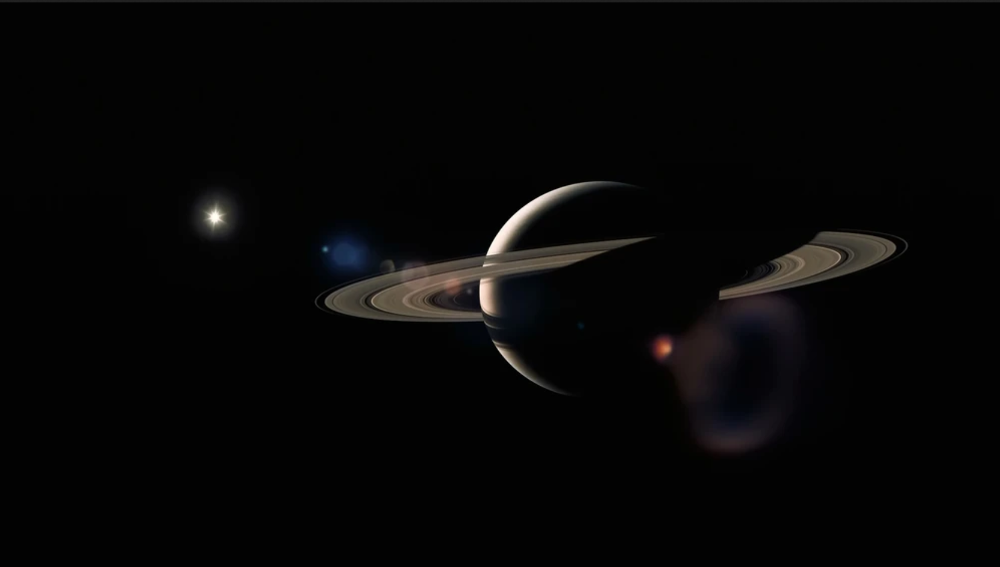

Місія 1: Операція "Червоний Світанок" (Марс)
Опис: Створення першої постійної колонії в кратері Єзеро.
Завдання:
- Розгорнути сонячні батареї для живлення бази.
- Провести буріння ґрунту для пошуку води.
- Налаштувати систему життєзабезпечення "Ares-V".

80%
100%
19 осіб
Опис: Створення першої постійної колонії в кратері Єзеро.
Завдання:
Опис: Глибоководне дослідження підлідного океану на наявність життя.
Завдання:
Опис: Видобуток рідкісних металів на астероїді Психея-16.
Завдання:
